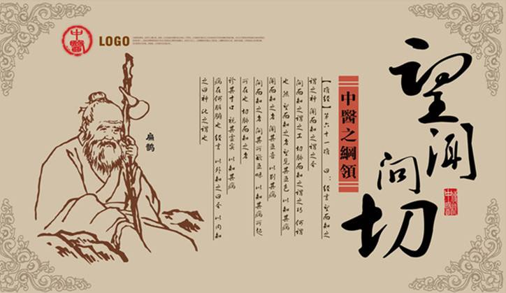
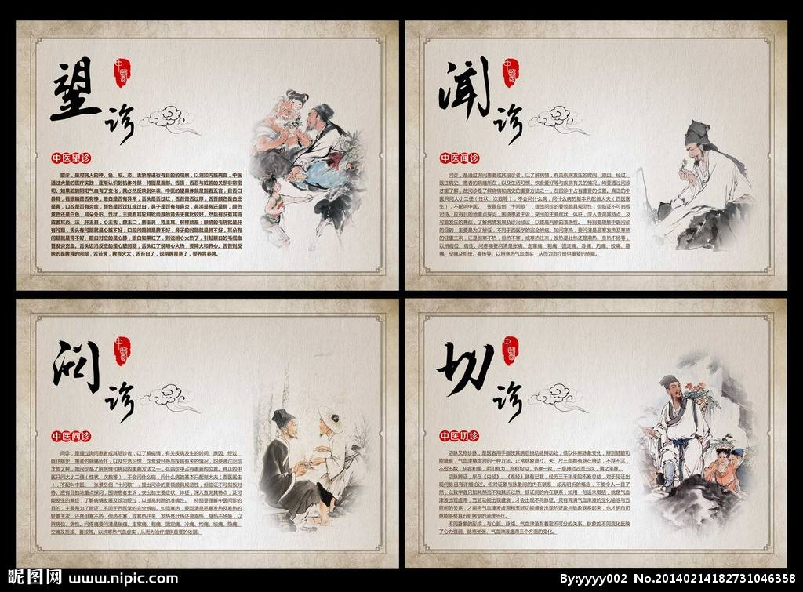

- 手机中医脉诊网

- 收藏中医脉诊网

- 关注中医脉诊官方微博

- TCM Management System

- 400-800-8888
中医简介
 中医（Traditional Chinese Medicine），一般指以中国汉族劳动人民创造的传统医学为主的医学，所以也称汉医。 是研究人体生理、病理以及疾病的诊断和防治等的一门学科。中医诞生于原始社会，春秋战国时期中医理论已基 本形成，之后历代均有总结发展。除此之外对汉字文化圈国家影响深远，如日本汉方医学，韩国韩医学，朝鲜高 丽医学、越南东医学等都是以中医为基础发展起来的。中医承载着中国古代人民同疾病作斗争的经验和理论知识， 是在古代朴素的唯物论和自发的辨证法思想指导下，通过长期医疗实践逐步形成并发展成的医学理论体系。
中医四诊
 所谓“望诊”，就是观察病人的神、色、形、态的变化。“神”是精神、神气状态；“色”是五脏气血的外在荣枯色泽的 表现；“形”是形体丰实虚弱的征象；“态”是动态的灵活呆滞的表现。这就是对病人面目、口、鼻、齿、舌和苔、四 肢、皮肤进行观察，以了解病人的“神”。 所谓“闻诊”，是指听病人说话的声音、呼吸、咳嗽、呕吐、呃逆、嗳气等的声动，还要以鼻闻病人的体味、口臭、 痰涕、大小便发出的气味。所谓"问诊"就是问病人起病和转变的情形，寒热、汗、头身感、大小便、饮食、胸腹、 耳、口等各种状况。 所谓“切诊”，就是脉诊和触诊。脉诊就是切脉，掌握脉象。触诊，就是以手触按病人的体表病颁部分，察看病人的 体温、硬软、拒按或喜按等，以助诊断。
Copyright @ 2017 she all rights reserved 客服热线：400-800-8888 (ICP)备案编号：川ICP备12345678号 川卫网审（2010）第006号 文明办网文明上网投诉电话：010-57476997 举报邮箱：tousu@zhzyw.org